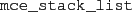
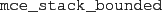
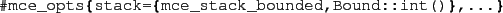
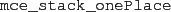

Stacks
A stack is used to store verification stack, i.e., the program
states (together with an associated monitor state -
a verification state) encountered
on the run from the initial verification state to the current one.
Available stacks:
-

An unbounded list based stack implementation.
-

An bounded stack implementation, which accepts as parameter
the bound. If the stack overflows, the most recent entries overwrites
the oldest ones.
That is, it can be specified as follows in the
@mce_opts@ record:

-

A bounded stack with just one place.
2010-07-05